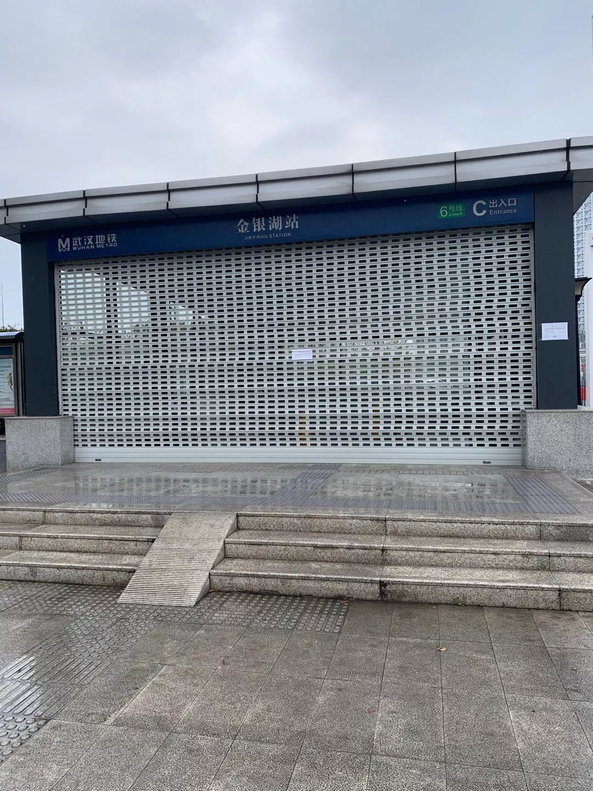
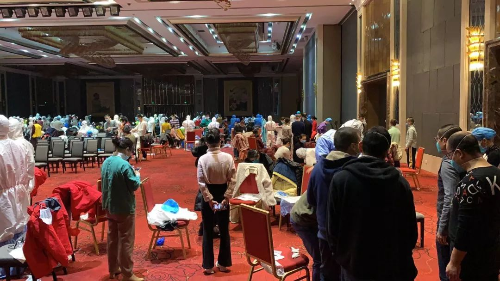
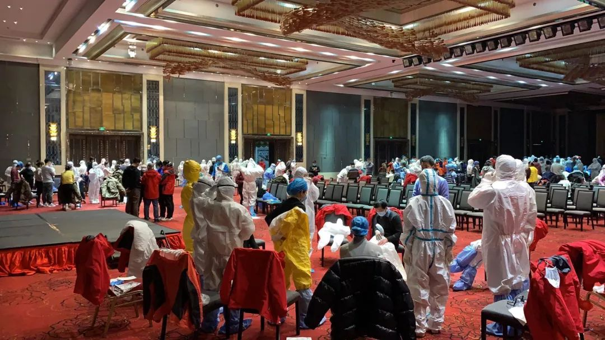

北美“百万口罩”计划“翻车”记：“了不起的年轻人”，还是“沽名钓誉的国际贸易贩子”？ - 经济观察网 － 专业财经新闻网站
原文链接 备份链接 经济观察网 记者 刘可 1月28日，一条“北美留学生募集到340万防护服捐给武汉”的视频迅速在网络上蹿红。“百万口罩”计划的发起人刘狄青在视频中说道：“我们在阿拉巴马州筹集到了340万防护服，估计是在美国能找到最大的货 …
很多人说，老王你有空就吹牛逼吧，于是我就写了。
 一、万人，空城
一、万人，空城
广东的医疗队在2月9日晚9点左右到达机场，整个天河机场人声鼎沸，都是各省支援的医疗队伍，这对当地的统筹组织能力是个很大的考验。我们很幸运乘坐一辆公车来到酒店，和酒店的保安聊天，说酒店之前供给援建两个神山的工人居住，之后关停了一段时间，现在重新开放供给医疗队居住。大概11点办理了入住，是夜每人一桶泡面，先抢先得，托运的行李尚未到达，大伙没来得及洗漱就匆匆休息。
翌日，吃上了一顿正经的早餐，大WH目前这种状况能提供这种保障相当不易，后来每天三餐变着法的上新花样都快让人感动哭了。


当天，朋友们都在疯传某省医疗队队员被厢式货车接送，行李丢了好多之类的消息，大伙对尚未到达的行李多了一层担心。当时尚未出台酒店封闭式管理的规定，我和一位队友商量后带着严密的防护出门买物资，马路上难得看到车和人，大部分的商店也关了，我们还是靠着酒店保安的消息走了两三公里才找到一家超市，里头稍微有点人气，各种防护装备让人惊诧，戴口罩那是正常的，摩托帽雨衣都有；由于怕随便拍照惹麻烦，我忍住没拍。当天买了洗衣液洗手液指甲刀这些生活物资，本想买多点，但想到要手提两三公里就作罢。


当天上午，开了个动员会，基本知道是进方舱，重点培训防护服的穿与脱。对于目标医院，需要做什么工作尚不清楚。下午的时候，万众期盼的行李到了，整整三车十三吨就靠我们自己一件一件卸下来。但是只有四五个地级市准备了相对充裕的医疗物资，这给我们后面的物资危机埋下了伏笔。


二、保命要紧
10号晚上，进行穿脱防护服的训练。我所在城市的队伍组织一块练习，兄弟医院里头一位ICU的护士当起了老师（也是个老王），平素里我们觉得无比熟悉的手卫生戴口罩都被抓出一堆毛病，等到我练时更被骂的那个惨。我自觉还是有点傲气的人，那晚觉得被骂是无比荣幸的-等上了线，一丁点的不慎就可能导致致命的感染，咱不想当什么英雄也怕死，所以必须苦练保命技能。从某种意义讲，老王训我是在救我的命，感恩是必须的。接下来11,12号我们一方面待命随时进舱，一方面和队友们探讨脱防护服各个细节，不敢说优秀，保命是没问题了。


12号晚上，接到通知，14日凌晨2点到8点干活，想想有点小紧张呢！
原文链接 备份链接 经济观察网 记者 刘可 1月28日，一条“北美留学生募集到340万防护服捐给武汉”的视频迅速在网络上蹿红。“百万口罩”计划的发起人刘狄青在视频中说道：“我们在阿拉巴马州筹集到了340万防护服，估计是在美国能找到最大的货 …
原文链接 备份链接 医院人员领取志愿者送的医疗物资。受访者供图 文 | 李晓芳 编辑 | 胡大旗 新型冠状病毒肺炎疫情扩大后，湖北省内的医院医疗物资告急。从1月23日开始，很多医院自行发布物资募捐公告。几乎同一时间，各种民间力量行动起来， …
原文链接 备份链接 图片来源：海洛创意 记者：梁宙 “ 武汉一线医护人员物资仍有较大缺口，湖北省卫生计生宣传教育中心通过官方微信公号“健康湖北”发布了武汉各大医院的接受社会捐赠公告。其中，有的医院求援公告已更新至第五版。 ” 武汉一线医护 …
原文链接 备份链接 非常时期，武汉成了全国人民挂念、祈福的城市。封城后，武汉人民的真实生活是什么样？ 正和岛自1月26日起特别推出《叶青：我在武汉疫区的第N天》专栏。叶青是一位定居武汉40年的市民，也是一名学者和官员。接下来的一段时间，他 …
原文链接 备份链接 1月23日，武汉市公共交通停运。一些本地的私家车主决定为医务人员护航，免费接送他们上下班，并运送救援物资到各大医院。34岁的车车便是其中一员。 文 | 吴美芬 从1月底开始，车车几乎跑遍了武汉每一个医院，为医护人员送 …